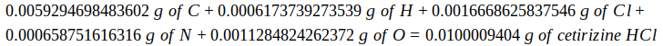

First, I found the molar masses of each of the elements in C21H26Cl2N2O3, the active ingredient in Aller-tec, according to the periodic table of elements. The amounts in cetirizine HCl were calculated by multiplying the number of molecules in each element by their molar mass:
| Chemical | Molar Mass (grams per mole) (essentially the "g of element" in the equation below) |
Number of Molecules | Amount in Cetirizine Hydrochloride |
|---|---|---|---|
| Carbon (C) | 12.01 | 21 | 252.21 |
| Hydrogen (H) | 1.01 | 26 | 26.26 |
| Chlorine (Cl) | 35.45 | 2 | 70.9 |
| Nitrogen (N) | 14.01 | 2 | 28.02 |
| Oxygen (O) | 16 | 3 | 48 |
| Rounded Total | 425.35 |
Now, I know that the 10 milligrams of cetirizine HCl is equal to 0.01 grams. My end result is the number of grams of one of the elements in cetirizine HCl, so in order to start the prcoess, I multiply 0.01 grams by the molar mass of cetirizine HCl. Next, I multiply the equation by the number of molecules of a chosen element over 1 mol of that element, because that is equivalent to just the number of molecules of the element. Finally, I multiply what I have so far with the molar mass of the element under focus. The equation is as follows:
By the rules of dimensional analysis, the grams and moles should cancel out each other and leave the grams of the molar mass of the element alone. "Grams" becomes the final unit, and the numerical value is the grams of that element in 1 tablet. This equation will output the number of grams in 10 milligrams of cetirizine HCl. If milligrams is desired, multiply the final result by 1000.
The table below contains the elements and the results after the converisons:
| Element | Number of molecules | Molar Mass | Grams | Milligrams |
|---|---|---|---|---|
| Carbon (C) | 21 | 12.01 g/mol | 0.0059294698483602 or 5.9 x 10-3 |
5.9294698483602 |
| Hydrogen (H) | 26 | 1.01 g/mol | 0.0006173739273539 or 6.2 x 10-4 |
0.6173739273539 |
| Chlorine (Cl) | 2 | 35.45 g/mol | 0.0016668625837546 or 1.7 x 10-3 |
1.6668625837546 |
| Nitrogen (N) | 2 | 14.01 g/mol | 0.000658751616316 or 6.6 x 10-4 |
0.658751616316 |
| Oxygen (O) | 3 | 16 g/mol | 0.0011284824262372 1.1 x 10-3 |
1.1284824262372 |
And it works, too. Adding up the grams of each element results in the grams of cetirizine HCl in one tablet of Aller-tec:
